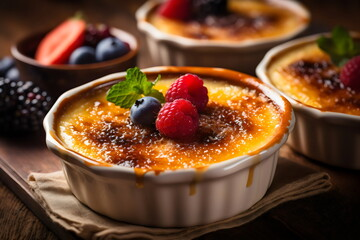

origin: ancient-rome, France, england
taste: creamy, sweet, aromatic, silky texture
ocassion: special feasts, festivals, family-gatherings
served with: warm-baked pies,fresh fruits, classic puddings, after lunch
To make custard, heat whole milk in a saucepan until it simmers, then remove it from the heat. In another bowl, whisk together large egg yolks, granulated sugar , cornstarch, and salt until smooth. Gradually whisk half of the hot milk into the egg mixture to temper the eggs, then combine everything in the saucepan. Cook over medium-low heat, stirring constantly, until the custard thickens to coat the back of a spoon. Take it off the heat and stir in vanilla extract and unsalted butter until the butter melts.